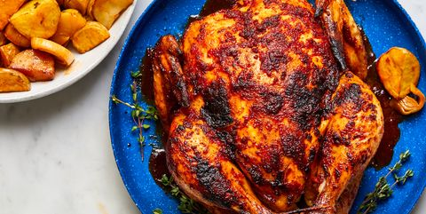

Tomato Butter-Roast chicken

Description
I am firmly in the camp that everyone should know how to properly roast a chicken, and this should be the recipe
you try. Tomato butter works wonders on chicken. Not only does it keep the bird moist, but the healthy dose of
tomato paste brings a slightly sweet, umami acidity, which chicken could often use
Ingredients
- ground cumin
- ground mustard
- cayenne pepper
- kosher salt
- Freshly ground black pepper
- whole chicken
- baby Yukon potatoes, quartered
- mato paste
- fresh thyme leaves
- extra-virgin olive oil,extra-virgin olive oil
preparation
- In a small bowl, combine cumin, mustard, cayenne, 1 tablespoon salt, and several grounds of black pepper.
- Pat chicken dry. Rub spice mixture all over chicken. Let sit at room temperature 1 hour.
- Preheat oven to 400°. In a large bowl, toss potatoes, leeks, and oil; season with salt and black pepper.
Transfer about half of potatoes and leeks to a large Dutch oven or heatproof pot. Arrange chicken on top.
- In a medium bowl, whisk butter, tomato paste, thyme, and remaining 1 teaspoon salt until smooth. Reserve 1/4
cup tomato butter for serving.